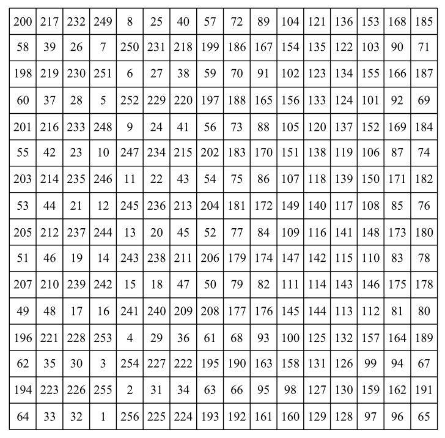

在富兰克林的16×16的幻方中，所有行和列加起来是2056。它不是一个真正的幻方，因为对角线的和并不是2056，但具有十分多样的特征，克利福德·A. 皮克弗（Clifford A. Pickover）写道：“毫不夸张地说，它的奇妙结构足够我们花一辈子的时间来探索。”例如，每个2×2的小正方形（共有225个）相加之和是514，这意味着每个4×4的小正方形加起来是2056。这个正方形中还包含许多其他对称性和规律。

图附-2 富兰克林的幻方